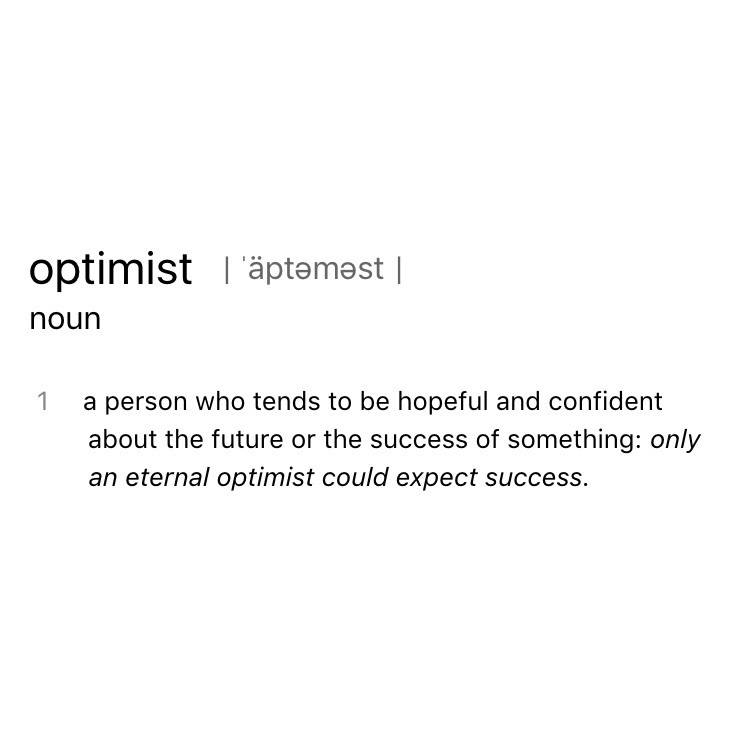
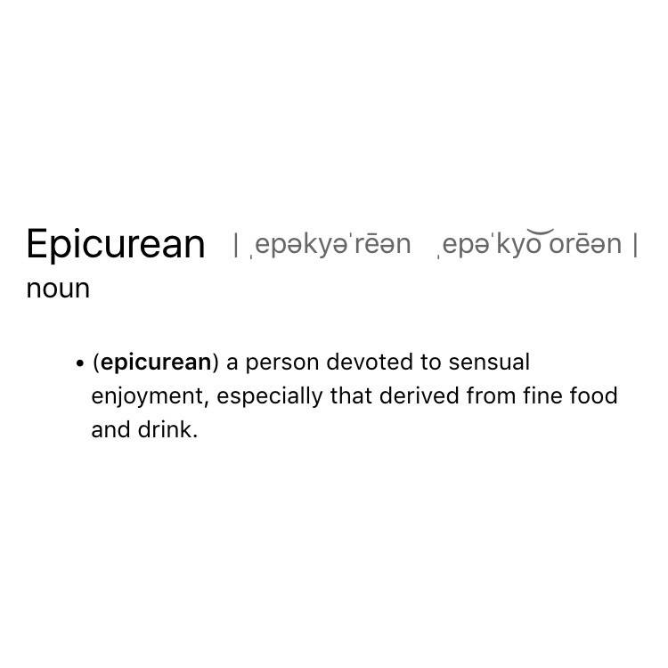
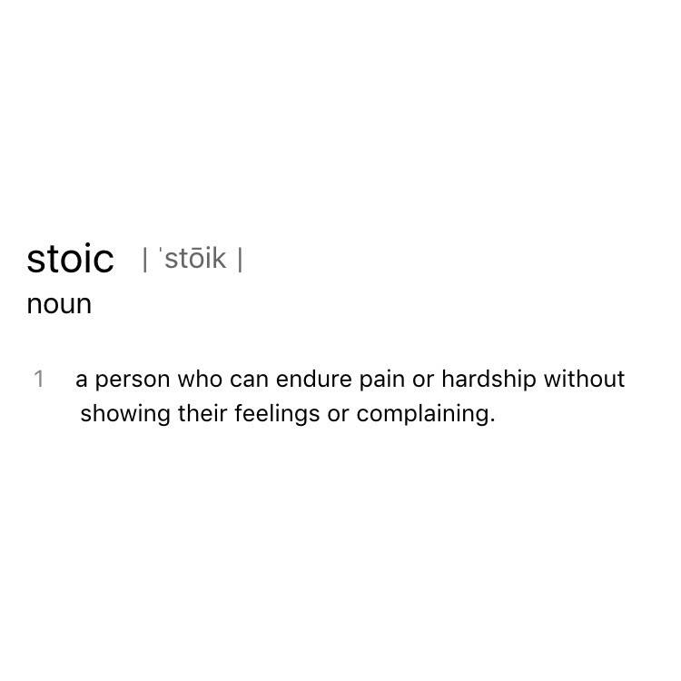
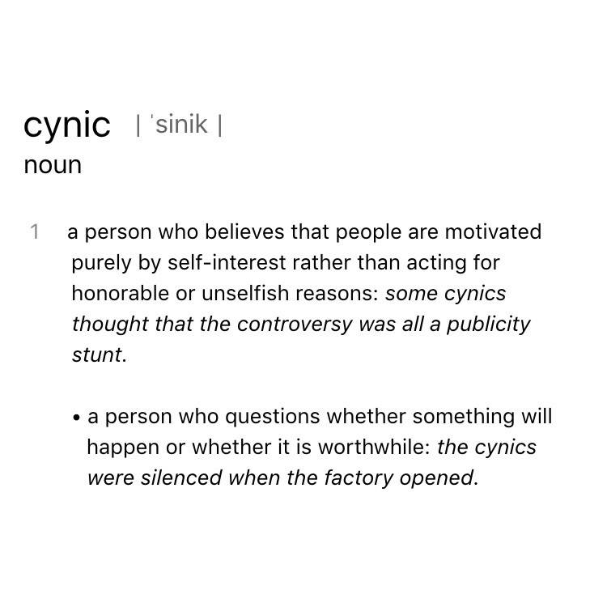
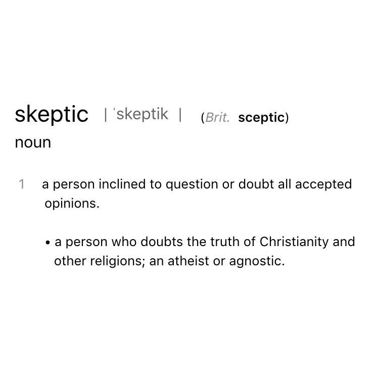
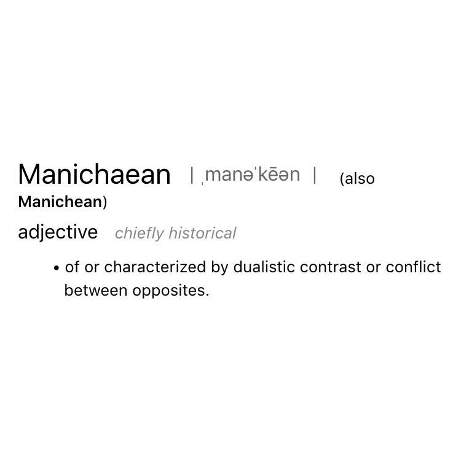

WORDS THAT GET THEIR MEANING FROM A POOR INTERPRETATION OF THE FORMAL PHILOSOPHY THEY'RE NAMED AFTER
-

Optimist
Optimism is a formal enlightenment era philosophy that supposes that the world we live in is the "best possible world" either because the laws of the universe are such that the world is the only way it could possibly be (a sort of tautological optimism) or because a benevolent force (i.e., God) controls the world and optimizes it for goodness. The latter can itself have two interpretations: All is always well from the right perspective, or more commonly that suffering is "for our own good".
-

Epicurean
The modern meaning of Epicurean is almost completely disconnected from the Ancient Greek philosophy of Epicureanism. This philosophy rejects divinity of any kind and does promote "pleasure seeking" but explicitly teaches that the path to true pleasure is modest living, simple means, and the gaining of knowledge through study. The ultimate pleasure is to understand the world so well you no longer depend on fulfilling superficial desires like fine foods, drink, and materialism to be happy.
-

Stoic
This one is actually pretty close. Stoicism is a philosophy founded by Zeno of Citium (not *that* Zeno) that espouses self control over emotional response and an acceptance of life in harmony with "nature" which is to say, your life is what it is so learn to be happy despite hardship rather than allow hardship to rob you of happiness. Epictetus famously once said we should be "sick and yet happy, in peril and yet happy, dying and yet happy, in exile and yet happy, in disgrace and yet happy."
-

Cynic
Philosophical cynicism rejects all standard measures of success and seeks happiness through "virtue". It's practitioners rejected wealth, luxury, material possession, and even general concepts like power and fame, and cultural norms of dress and custom. Anything that isn't valuable in nature itself is devalued. I'm not sure how this came to be associated with contemporary cynicism except that a cynic would probably question the root motives of cultural compliance that others take for granted.
-

Skeptic
The Greek philosophy of Scepticism holds that we have no true knowledge and perhaps knowing anything with certainty is impossible. That all knowledge is built ultimately upon some assumed truth (religious or otherwise) and therefore is akin to faith but not true knowledge. Scepticism even discounts the validity of direct observation as unverifiable.
-

Manichean
This is a much less common word but you see it in academic writing, often implying a sort of confused dualism: a person who can't make up his mind or is inconsistent in his thinking. Manichaenism itself was a prevalent post-pagan religion that taught a dualistic view of nature: the world of matter and the world of light. We live between these worlds, a material being imbued with the potential for divinity.